mruby/c IDE の使い方
このページでは、mruby/c IDE の使い方について、ダウンロードから実際のマイコンボードで実行するまでの手順を、以下のターゲットを例にして説明します。
- PC: Windows11
- マイコンボード: RBoard
ダウンロードとファイル展開
https://mrubyc.github.io/downloads/ から、ビルド済み実行ファイルがダウンロードできます。
この記事では、「mruby/c IDE 1.3.0 for Windows」の箇所から、zip 形式のファイルをダウンロードしています。
ダウンロードしたファイル上で右クリックして、「すべて展開」を選びます。
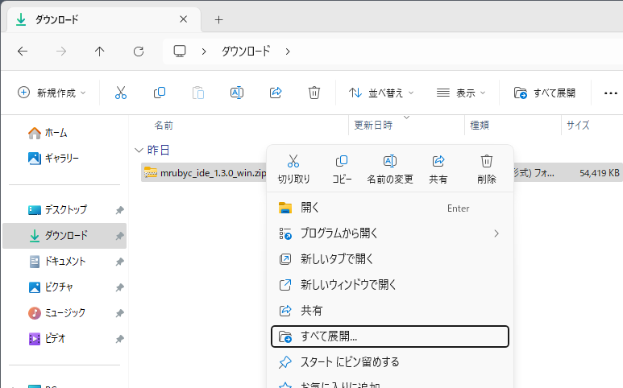
展開のダイアログが表示されますので、「ファイルを下のフォルダーに展開する」欄に、任意のパスを入力します。この記事では、わかりやすさのため Cドライブのルートに展開します。
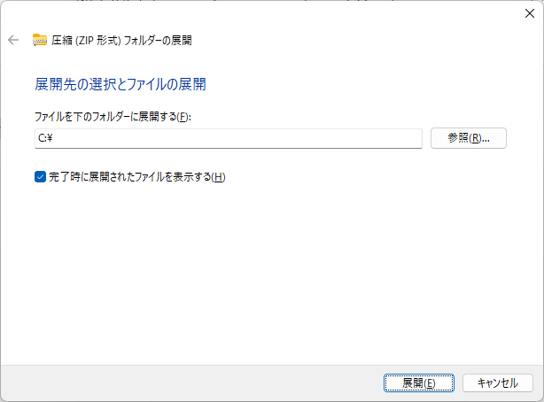
展開されたフォルダを開き、「mrubyc_ide.exe」をダブルクリックして実行します。
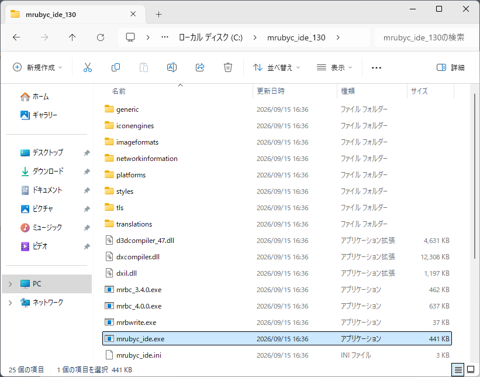
Windowsの設定により、「Windowsによって PCが保護されました」と表示される場合があります。詳細情報のリンクから「実行」ボタンをクリックし実行してください。 無事以下のようにIDEのウインドウが表示されます。
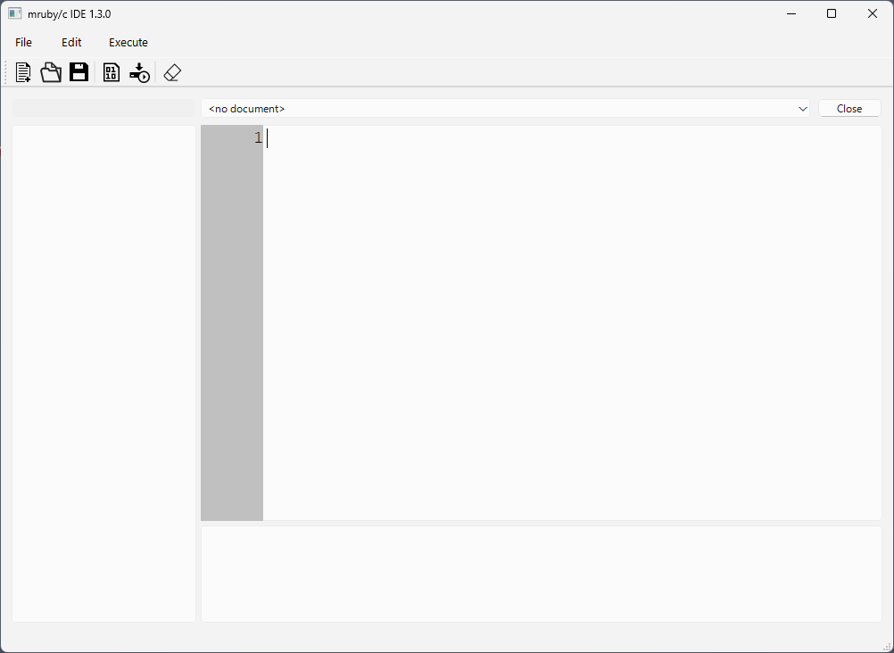
Macの場合も同様に、「開発元を検証できないため開けません」と表示される場合があります。 その場合は、
- システム設定を開き「プライバシーとセキュリティー」を選びます。
- 右ペインのセキュリティー欄が [●] App Store と確認済みの開発元からのアプリケーションを許可 になっていることを確認します。
- その下に「mrubyc_ide”は開発元を確認できないため、使用がブロックされました」と表示されていますので、「このまま開く」ボタンをクリックして許可します。
- 同様の手順で、mrbc_*、mrbwrite も一度実行し、システム設定から許可をしておきます。
画面の説明
IDEの画面は、大きく分けて3つのエリア（ペイン）があります。
- 左側は、プロジェクト名やプログラム名を表示します。
- 右上は、プログラム編集エリアです。
- 右下は、コンソール画面です。マイコンボードへのプログラム書き込み状況や、マイコンからの画面出力を表示します。
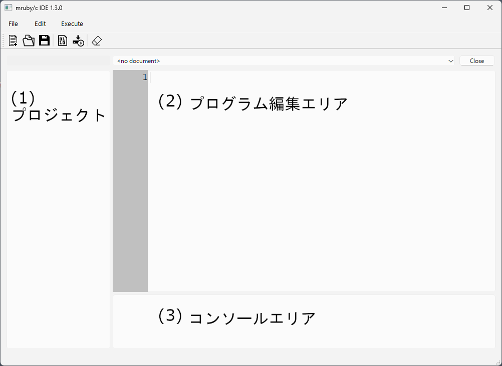
初期設定
マイコンボードは、UART (USB-UART) 等でシリアル接続されることを想定しています。実際にボードを接続し、COM番号が何番になっているかをデバイスマネージャなどで確認します。
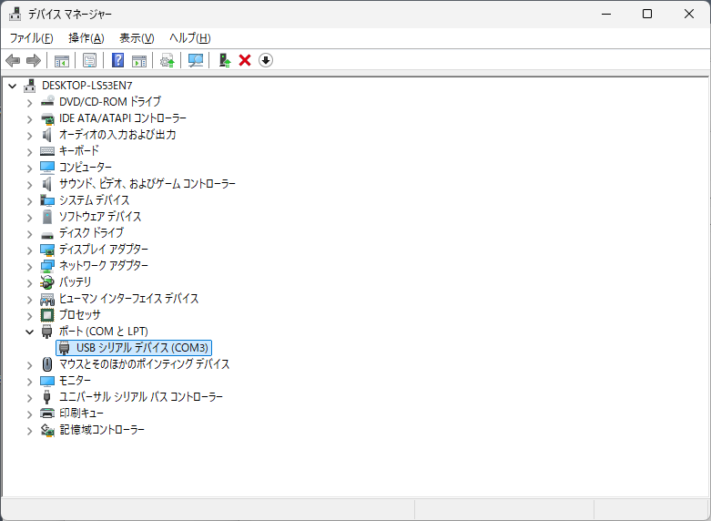
メニューから File > Settings.. を選び、Setting ダイアログを開きます。
ダウンロードしたファイル中に mrbc_***.exe ファイルがありますので、ダイアログの「mrbc」欄にそれを指定します。
- パス名を直接入力するか、右端の
[...]ボタンで表示されるファイル選択ダイアログを使用します。 - mrbc_の後の数字は、mruby/c のバージョンです。使用するマイコンボードの仕様に合わせてください。
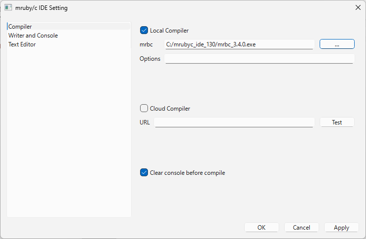
次に、左ペインの Writer and Console をクリックします。
- mrbwrite 欄に、先ほどと同様に mrbwrite.exe を指定します。
- Port 欄に、デバイスマネージャで確認した COM番号を指定します。
- Baudrate 欄に、19200を指定します。
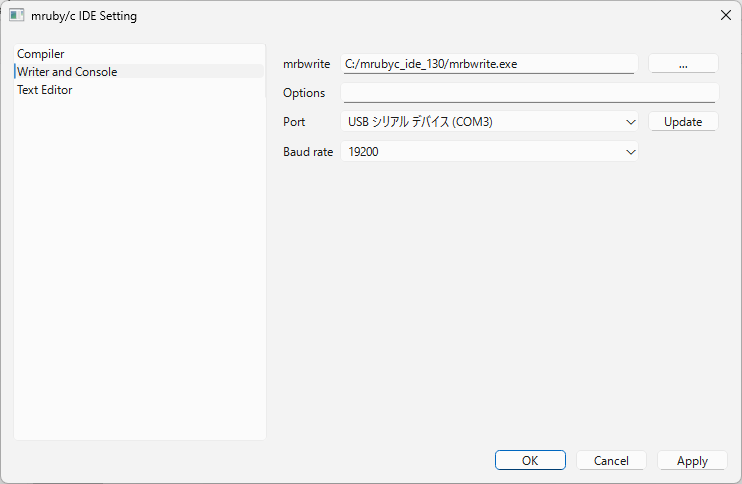
プログラムの作成
新規プロジェクトの開始
では、オンボードのLEDを使って、エルチカをおこなってみます。
まず、プログラム（プロジェクト）を保存するフォルダを作ります。
任意の場所で良いですが、この記事では簡単のため C:/rboard_proj とします。
エクスプローラ等を使って、このフォルダを作ってください。
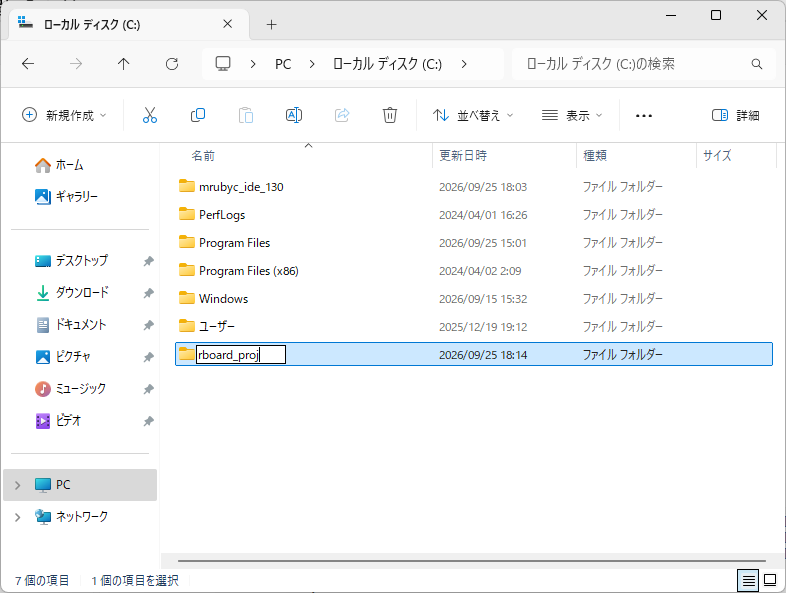
IDEに戻り、メニューから File > NewProject を選びます。
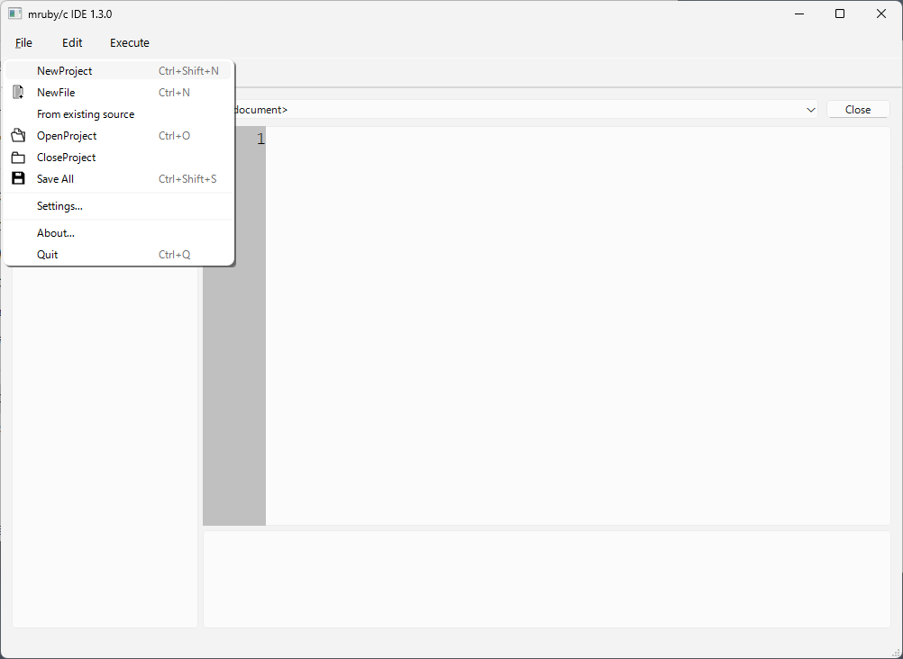
Setup New Project ダイアログが開きます。
- Project 欄に、
ElChika(任意の名前) を入力します。 - Create In 欄に、先ほど作った
C:/rboard_projを指定します。
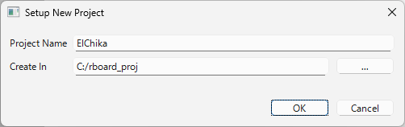
プログラムの入力
一番左の New File アイコン（）をクリックし、New File ダイアログを開きます。
- FileName 欄に、
main（任意の名前）を入力します。
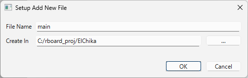
プログラム編集エリアに、以下の内容を入力してください。
loop {
leds_write( 1 )
sleep 1
leds_write( 0 )
sleep 1
}
Compile アイコン（）をクリックし、コンパイルします。
コンソールエリアに The process "Local Compile" exited normally. と表示されればコンパイル成功です。
注意：leds_write() は、オンボードLEDを操作する RBoard専用のメソッドです。
実行
次に、Write アイコン（）をクリックし、ターゲットマイコンに書き込みます。
RBoardでは、リセット後の数秒間のみプログラムの書き込みモードとして待機する仕様です。 （書き込み待機中は、オンボード上のLEDが素早く点滅します）
そのため、実機のリセットとWriteアイコンのクリックを、以下のようにリズム良く実施する必要があります。
- RBoardのリセットスイッチを押す。
- リセットスイッチを離すと同じ位のタイミングで、IDE画面の
Writeアイコンをクリックする。
書き込みが正常に終わると、自動的にプログラムが実行されます。
プログラムの書き換え
次にプログラムを書き換えて実行してみます。
プログラム編集エリアを、以下の内容に書き換えてください。
(1..15).each {|n|
leds_write( n )
puts( n )
sleep 2
}
書き換え終わりましたら、Write アイコン（）を使って、プログラムを実行してください。
Write アイコンは、内部では、保存→コンパイル→書き込み を連続して実施しています。そのため実際にはプログラムを書き換えた後、Write アイコンのクリックだけで、プログラムを実行させることが可能です。
このプログラムでは、オンボードLEDがバイナリ順で点滅するとともに、コンソール画面にも1から15までの数字が表示されます。